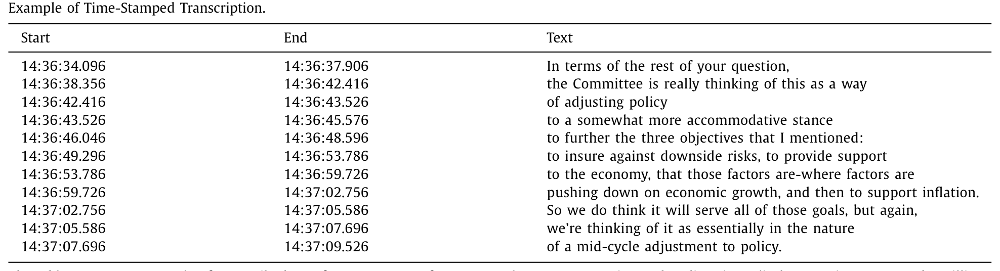
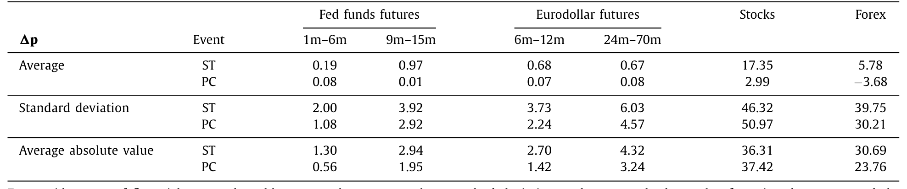
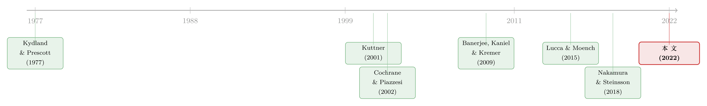

主席开口的那一分钟：把美联储的「话」按秒对齐到价格上
本文读的是 Gómez-Cram & Grotteria (2022, Journal of Financial Economics)：在 FOMC 日，声明（statement）发布那一刻的价格变动，竟能强烈预测半小时后新闻发布会上的价格变动——中期欧洲美元期货的相关系数高达 58%，标普 500 也有 44%。作者把发布会视频的音频逐秒转成文字、再与高频价格对齐，最终把这股相关性精准定位到「主席解释声明改动」的那几分钟。
1 引言：一个被「重复」的故事
先讲一个 2019 年 7 月 31 日的下午。
那天 14:00，FOMC 公布利率决议：降息 25 个基点。市场本来押注的是「平均 35 个基点」、甚至不排除一次降 50 的可能——所以这次降得比预期少，价格立刻朝着「没那么鸽」的方向调整了一下。故事到这里，本该结束了：信息已经公开，价格已经反应，一个有效的市场不应该再为同一条消息动第二次。
可偏偏，半小时后的 14:30，鲍威尔（Powell）走上讲台开新闻发布会。记者们劈头盖脸地追问那句新加进声明的话到底什么意思，鲍威尔答道：委员会把这次降息看作「a mid-cycle adjustment to policy（一次周期中段的政策调整）」。就这么一句话——它等于宣告「这不是一连串降息的开始」。于是从 14:30 到 15:15，利率期货、SPY、汇率，又一次朝着和 14:00 那一刻同样的方向移动了。

Table 1
这就奇怪了。声明 14:00 已经白纸黑字发出去，发布会上鲍威尔并没有宣布任何新决议，他只是在「解释」。可价格为什么还会沿着原来的方向再走一程？这正是本文要回答的张力所在：如果市场是充分有效、充分理性的，发布会本不该再含有可被价格反应的「新信息」。但数据告诉我们，它含有。
2 一个反常的相关：58% 与 44%
作者把这个直觉做成了一个干净的统计量。
对每一个 FOMC 日，他们计算两段互不重叠、也不相邻的价格变动：一段是「声明前后」（statement，记 ST，从声明发布前 10 分钟到发布后 20 分钟），另一段是「发布会期间」（press conference，记 PC，从发布会开始到结束）。然后看这两段变动的相关性。
结论令人侧目：对 60 个月（即中期）的欧洲美元期货（Eurodollar futures），ST 与 PC 的相关系数高达 58%；对标普 500，是 44%。要知道，这两段窗口在时间上完全分开、中间隔着半小时，按有效市场的逻辑，第二段本该几乎不可预测。可现在，第一段的方向，预测了第二段的方向。作者还顺手指出：这个关系稳定到足以让一个「跟着这个模式交易」的简单策略变得相当赚钱。
值得玩味的是另一个细节：发布会期间的价格变动，其「平均绝对值」一点不比声明期间小。如表 2 所示，对股票，声明前后的平均绝对变动是 36.31 个基点，而发布会期间反而是 37.42；对长端（24–70 月）欧洲美元期货，则是 ST 的 4.32 对 PC 的 3.24。换句话说，发布会绝不是「声明的余震」那么简单——它本身就是一个量级相当的价格发现（price discovery）现场。

Table 2
注意一个方向上的不对称：相关性对期限更长的利率衍生品、股票、汇率更强。这是全文的一条暗线——它把价格反应和「前瞻指引（forward guidance）」对长期预期的塑造联系了起来。
3 识别策略：把声音变成「带时间戳的文本」
相关性只是开胃菜。真正关键的一步在于：到底是发布会里的哪一句话，撑起了这 58% 的相关？
要回答这个问题，光有「这一天发布会整体涨了多少」是不够的——你得知道每一分、每一秒，主席在说什么、价格在怎么动。这正是本文方法论贡献的所在。作者做了两件别人没做过的事。
第一件，把发布会视频的音频转成「可读、且带精确时间戳的文本」。 他们把音频切成约 3 秒一帧，预处理成声谱图（spectrogram），再用 Hannun et al. (2014) 的端到端深度学习算法（即著名的 Deep Speech，用循环神经网络做概率字符建模）直接优化「给定音频、某段文字出现的概率」。形式化地说，给定音频序列 X，他们要在所有可能的词序列集合 V 中，找出让 \(p(W\mid X)\) 最大的那一个 \(W^*\)：
随后用 Graves et al. (2006) 的连接时序分类（Connectionist Temporal Classification, CTC）算法把神经网络输出映射成可读文本，再用集束搜索（beam search）估计 \(W^*\)，最后与 FOMC 官方公布的发布会文字稿对齐——做到音频与文字的逐句精确匹配。如表 1 那样，每一句话都被标到了「时:分:秒.毫秒」的精度。
第二件，从声明里「抠」出新闻。 Fed watcher 们有个老习惯：把这次声明和上次声明逐字对比，看哪些句子、哪些词被加了、被删了——华尔街日报甚至会在声明发布几分钟后就登出「改了哪儿」。作者把这套做法自动化：对每场发布会 j，追踪相对上一份声明被增删的句子，拼成一个向量 \(s_j\)。平均下来，每份声明改动 3.8 个句子，每处改动平均 7 个词。关键在于——这个「声明新闻」纯粹是文本层面的链接，完全不用任何价格信息。
有了带时间戳的发布会文本 \(W_j\) 和声明新闻 \(s_j\)，再叠上高频价格（每分钟取毫秒级中间价的中位数），三者就能在同一根时间轴上对齐。于是「哪一分钟主席在谈声明的哪处改动、价格同时怎么动」这件事，第一次变得可观测。
4 statement news 与「澄清的那几分钟」
把这套工具开动起来，答案浮出水面。
作者定义：当主席在发布会里谈到声明改动时，那些分钟叫做「与声明相关的分钟（statement-related minutes）」。他们发现，在这些分钟里——
- 资产价格的平均绝对变动比发布会其余时段更大；
- 交易量显著上升；
- 更重要的是，价格平均朝着和声明发布时同一个方向移动。
于是那 58% 的相关，被精准地定位到了这几分钟身上。发布会里真正「带电」的，不是寒暄、不是泛泛而谈，而恰恰是主席澄清「新加进声明的那句话到底意味着什么」的时刻。这也和前瞻指引的逻辑严丝合缝：作者进一步用 Pennebaker et al. (2015) 的语言学词典刻画这些句子的语言风格，发现它们更多谈论「长期的未来」、用更具「澄清性」的措辞；尤其是引发最大价格波动的，正是主席一边谈未来、一边解释声明改动的那些句子。文本的「时间取向」（谈未来 vs. 谈当下/过去）甚至能吸收掉一部分「与声明相关分钟」所捕捉的效应。
作者还做了一个漂亮的稳健性对照：换上现成的文本工具——Neuhierl & Weber (2019) 的「鹰派/鸽派」词、Loughran & McDonald (2011) 的金融情绪词典——这些词确实重要，但和「时间取向」不同，它们无法吸收掉「与声明相关分钟」所捕捉的关系。也就是说，本文识别出的那条线索，不是「情绪」二字能替代的。
此外，作者用欧洲美元期货期权的隐含波动率（implied volatility）来度量投资者对利率的「不确定性」。结果是：声明显著降低了近端利率的不确定性，而发布会则负责了长端利率不确定性更大幅度的下降；而且，隐含波动率下降最猛的，仍然发生在「与声明相关的分钟」里。
5 这到底意味着什么？——八个机制的擂台
到这里，一个自然的追问是：好，价格确实在被一句句话推动，可这背后是什么样的市场？本文第 5 节摆开了一个「八种机制」的擂台，逐一拷问哪些能与发现相容、哪些被证伪。
先看被否掉的。 最重磅的一击，是针对充分信息理性预期（full-information rational expectations, FIRE）的模型——几乎今天所有央行都在用 FIRE 类模型指导货币政策（Coibion et al., 2018）。在 FIRE 下，价格前瞻、已吸收一切公开信息，在如此高的频率上本该近乎不可预测。可本文的正自相关说明：信息明明已经公开（声明早发出去了），价格却还在沿原方向漂移。FIRE 解释不了。
它同样难倒了「带参数不确定性的贝叶斯学习」这类无摩擦理性模型（Lewellen & Shanken, 2002）：要让这类模型拟合本文事实，要么得对投资者先验做出不可信的假设，要么得有一个「估计风险下降带来的正向价格漂移」这种反事实的东西。作者还排除了 Fed put、微观结构效应、流动性，以及「这不过是 Lucca & Moench (2015) 那条发布会前漂移（pre-FOMC announcement drift）的延续」这一可能。
再看被支持的。 真正与数据相容的，是那类显式刻画投资者对公开信号「差异化解读」（differential interpretation of public signals）的模型——Banerjee, Kaniel & Kremer (2009) 与 Banerjee & Kremer (2010)。在这些框架里，价格是内生的，正自相关恰恰是「投资者顺序收到信号」的均衡产物：同一条声明，不同人读出不同含义，发布会上主席的澄清又给了一轮新信号，于是价格分步、同向地把信息消化完。
于是反转出现：本文不只是讲了个「话会动价格」的故事，它把这股价格漂移变成了一块检验市场信息结构的试金石。作者还顺手验证了这类模型的额外预测——在「发布会前不确定性更大」的日子里，他们记录到：(1) 更大的价格漂移；(2) 更大的交易量；(3) 更大的已实现波动率；(4) 发布会交易量与声明前后交易量之间更强的关系。四条预测，四个支持。
6 文献脉络
这条研究的根，扎在货币政策与预期的老问题里。早在 Lucas (1972, 1973, 1976) 与 Kydland & Prescott (1977) 那里，人们就懂得了：忽略投资者预期、忽略政策的时间一致性，政策结论会被带偏；Cukierman & Meltzer (1986) 则把「模糊、可信度与通胀」写进了一个模型。但这些都偏理论——投资者究竟怎样对央行沟通形成预期，长期是个黑箱。
接着，高频识别这条经验路线登场。Kuttner (2001) 用联邦基金期货度量货币政策意外；Cochrane & Piazzesi (2002)、Gürkaynak, Sack & Swanson (2005) 把高频价格变动当作预期意外的近似；Nakamura & Steinsson (2018) 进一步揭示了「美联储信息效应（Fed information effect）」。然后，一个自然的问题是：FOMC 当天的价格行为本身就有反常——Lucca & Moench (2015) 发现了发布会前漂移，Cieslak, Morse & Vissing-Jorgensen (2019) 刻画了 FOMC 周期里的股票收益，Cieslak & Schrimpf (2019) 把央行沟通里的「非货币新闻」单拎出来。
而真正关键的一步，是把「文本」当数据——Lucca & Trebbi (2009)、Loughran & McDonald (2011) 开了头，Neuhierl & Weber (2019) 把鹰鸽词用进了货币政策。本文站在这两条线的交汇处，却又往前迈了一大步：它不止读文本，还把视频音频按秒对齐到价格，从而第一次能问「市场究竟在响应哪一个词」，并把答案落到 Banerjee 等人「差异化解读」的均衡里。
（关于 FOMC 当天的风险与定价，本博客另有两篇可参看：《把「这一次会议」的恐惧，从期权价格里解出来》 与 《被错读的，不是风险，是美联储》；至于「央行可信度如何变成定价因子」，见《加息到底有没有用？》。）

评论与延伸（Q&A + 研究方向）
(a) 几个可能的疑问
Q：ST 与 PC 两段价格变动相关，会不会只是「同一条慢消息在两段窗口里各反应一点」，根本谈不上预测？
这正是作者最在意的反驳。他们的回应有两层：其一，两段窗口互不重叠、也不相邻，中间隔着约半小时，按有效市场逻辑第二段本该不可预测；其二，他们用带时间戳的文本把相关性定位到了「主席解释声明改动」的具体分钟，并显示交易量在那几分钟显著上升、价格同向移动——这不是「同一冲击的物理余震」，而是新信号被分步消化。
Q：把音频转成文字会有识别误差，这些噪声会不会污染结论？
会有误差，但作者用了一道「保险」：他们把深度学习的转录结果与 FOMC 官方公布的文字稿对齐，再结合人工与自动流程做匹配。也就是说，最终用于分析的文本质量由官方稿背书，机器转录主要服务于「逐秒时间戳」这件官方稿做不到的事。
Q：为什么相关性对长端利率、股票、汇率更强，而不是近端？
因为故事的核心是前瞻指引。声明本身能迅速钉住近端利率（眼前这次会议干了什么是确定的），而「未来路径会怎样」这种长期预期，恰恰需要发布会上的澄清来塑造——所以长端衍生品、对长期现金流敏感的股票、以及由利差驱动的汇率，反应才更剧烈。
Q：「差异化解读」和「美联储信息效应（Fed information effect）」是一回事吗？
不是。信息效应说的是「央行行动泄露了它对经济的私有判断」，关注的是信号内容；本文强调的是即便信号公开，不同投资者对同一句话读出不同含义，从而在均衡里产生正自相关。前者关乎信息来源，后者关乎信息的异质解读结构。
Q：这会不会就是 Lucca & Moench (2015) 那条发布会前漂移的延续？
作者明确排除了这一点。pre-FOMC drift 发生在公告之前，且本文的漂移被锁定在发布会内部「解释声明」的分钟、并随声明改动而触发——它有清晰的语言学触发器，与单纯的日历效应或公告前漂移不是同一回事。
Q：那个「跟着相关性交易就能赚钱」的策略，是不是说明市场低效到可以白捡钱？
作者更愿意把它解读为「关系稳定且经济上显著」的证据，而非无风险套利。差异化解读模型本就允许价格内生地出现可预测的同向漂移；能否真的落袋，还要看交易成本、执行速度和这半小时内流动性的实际深度。
(b) 几个可能的研究问题与提案
1. 把这套「逐秒对齐」搬到公司债与信用市场。 【经济故事】公司债远比股票不透明、定价更依赖中介。当主席谈到与信用环境相关的措辞（如金融稳定、流动性支持）时，信用利差是否也出现同向的分步漂移？这能检验「差异化解读」在低透明市场是否更强。 【可行性】中。需要 TRACE 的分钟级（甚至更细）成交数据与本文同款的时间戳文本；难点在于公司债成交稀疏、并非每分钟都有交易，识别窗口要重新设计。
2. 外资持有人是不是「解读」得更慢、更分散？ 【经济故事】若价格的同向漂移源于投资者异质解读，那么对 Fedspeak 语言、制度更陌生的外国投资者，理应解读更慢、分歧更大。可以检验外资持有比例高的资产，发布会期间的漂移是否更持久。 【可行性】中。需把高频价格反应与持有人结构（如国债、公司债的外资持有份额）对接；识别上可用资产层面的外资敞口做横截面比较，但要小心遗漏变量（外资偏好的资产往往本身久期更长）。
3. 用流动性的盘口数据，区分「解读慢」与「中介慢」。 【经济故事】同向漂移既可能来自投资者解读分歧，也可能来自做市商在高不确定时段收紧风险预算。把发布会期间的报价深度、买卖价差与价格漂移联立，能把两种机制掰开。 【可行性】高。本文已有分钟级中间价；只需补上盘口深度/价差数据，按本文的「与声明相关分钟」切片做对照。这是对本文机制章节最直接的延伸。
4. 把方法迁移到 ECB、英格兰银行等多语种央行。 【经济故事】本文方法本质是「语言学 × 价格」的通用配方。不同央行的沟通风格、语言、记者互动差异巨大，跨央行比较能检验「澄清声明改动」这条机制的外部有效性。 【可行性】中。Altavilla et al. (2019, 2020)、Leombroni et al. (2020) 已为 ECB 备好高频价格与文本基础；难点在于多语种语音识别的精度，以及不同央行声明—发布会制度安排的可比性。
我的判断
这篇论文最漂亮的地方，不在那两个相关系数本身，而在它把一个抽象的市场效率之问，变成了一台可以「逐秒回放」的实验装置。以往研究只能拿到「这一天 FOMC 让市场动了多少」这种聚合量，而本文第一次让我们看见哪一句话、在哪一秒、推动了哪一类资产——这是方法论上实打实的进步，且这套「视频音频 × 时间戳文本 × 高频价格」的配方，可被搬到任何「想用市场价格给语言定价」的场景。
对识别，我有两点保留。其一，「跟着 ST 方向交易能赚钱」的论断需要更直面交易成本与这半小时内的真实流动性深度，否则容易被读成「市场低效」的过强结论；本文倾向于用差异化解读模型来安放它，方向是对的，但盘口层面的证据还可以更硬。其二，机制识别在很大程度上依赖「排除法」——八个机制里否掉七个、留下一个——这类论证天然受制于「候选清单是否穷尽」，差异化解读模型的胜出更多是「最不被证伪」，而非被一个正面的、可证伪的结构估计直接确认。
后续我最想看到的，是把这套工具接到信用市场与外资持有人上：如果同向漂移在更不透明、解读更分散的市场里更强、更持久，那「差异化解读」这条机制就会从「最不坏的解释」升级为「有横截面证据支撑的解释」。那才是把这台逐秒回放机真正用到极致的方式。
参考文献
- Banerjee, S., Kaniel, R., & Kremer, I. (2009). Price drift as an outcome of differences in higher-order beliefs. Review of Financial Studies 22(9), 3707–3734.
- Banerjee, S., & Kremer, I. (2010). Disagreement and learning: dynamic patterns of trade. Journal of Finance 65(4), 1269–1302.
- Cieslak, A., Morse, A., & Vissing-Jorgensen, A. (2019). Stock returns over the FOMC cycle. Journal of Finance 74(5), 2201–2248.
- Cieslak, A., & Schrimpf, A. (2019). Non-monetary news in central bank communication. Journal of International Economics 118, 293–315.
- Cochrane, J. H., & Piazzesi, M. (2002). The Fed and interest rates — a high-frequency identification. American Economic Review 92(2), 90–95.
- Gómez-Cram, R., & Grotteria, M. (2022). Real-time price discovery via verbal communication: method and application to Fedspeak. Journal of Financial Economics 143(3), 993–1025.
- Graves, A., Fernández, S., Gomez, F., & Schmidhuber, J. (2006). Connectionist temporal classification. ICML.
- Gürkaynak, R. S., Sack, B., & Swanson, E. T. (2005). Do actions speak louder than words? International Journal of Central Banking 1(1).
- Hannun, A., et al. (2014). Deep Speech: scaling up end-to-end speech recognition. arXiv:1412.5567.
- Kuttner, K. N. (2001). Monetary policy surprises and interest rates: evidence from the Fed funds futures market. Journal of Monetary Economics 47(3), 523–544.
- Kydland, F. E., & Prescott, E. C. (1977). Rules rather than discretion: the inconsistency of optimal plans. Journal of Political Economy 85(3), 473–491.
- Lewellen, J., & Shanken, J. (2002). Learning, asset-pricing tests, and market efficiency. Journal of Finance 57(3), 1113–1145.
- Loughran, T., & McDonald, B. (2011). When is a liability not a liability? Textual analysis, dictionaries, and 10-Ks. Journal of Finance 66(1), 35–65.
- Lucca, D. O., & Moench, E. (2015). The pre-FOMC announcement drift. Journal of Finance 70(1), 329–371.
- Lucca, D. O., & Trebbi, F. (2009). Measuring central bank communication: an automated approach with application to FOMC statements. NBER Working Paper 15367.
- Nakamura, E., & Steinsson, J. (2018). High-frequency identification of monetary non-neutrality. Quarterly Journal of Economics 133(3), 1283–1330.
- Neuhierl, A., & Weber, M. (2019). Monetary policy communication, policy slope, and the stock market. Journal of Monetary Economics.